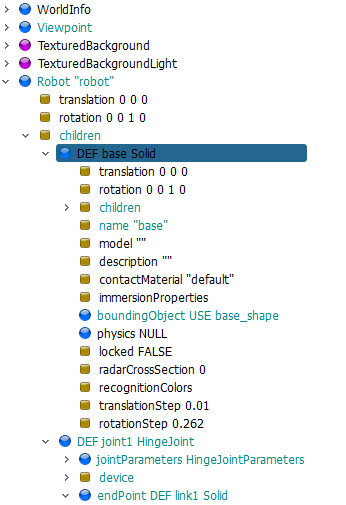

Homework <<
Previous Next >> Tutorial1
HW1
HW1 (5%): 建立由 Box 組成的平面四連桿機構 Webots 模擬場景
請將個人根據 https://mde.tw/cd2025/content/Stage1.html 導引內容的練習、以及製作 HW1 的過程拍攝成帶有說明字幕的影片, 根據下列影片標題上傳至 Youtube 後在指定時段內回傳至指定表單. 並在個人作業倉儲中以 HW1 頁面紀錄相關過程與心得.
操作影片標題: 國立虎尾科技大學 - 機械設計工程系 - cd2025 HW1 - 學員學號
相關提問:
- 在製作 HW1 之前是否實際練習 Tutorial1 與 Tutorial2?
- Webots 是什麼樣的軟體？它主要用途為何？
- 在 Tutorial1 中，學習者需要操作的主要機器人模型名稱是什麼？
- 如何在 Webots 中建立並執行一個新的模擬世界（world）？
- 請說明如何讓機器人在模擬中移動，並指出相關的程式控制方式。
- Tutorial1 中，學習者需要修改哪些參數或檔案來控制機器人的行為？
- 請簡述 Webots 控制器（controller）的功能及其與機器人的關係。
- 在 Tutorial2 中，機器人需要完成什麼樣的任務或行為？
- Webots 中的 "Supervisor" 是什麼？它與一般機器人控制器有何不同？
- 請說明如何在 Webots 中進行感測器數據的讀取與應用（例如距離感測器、攝影機）。
- 若要延伸 Tutorial2 讓機器人具備自主避障能力，你會怎麼設計與實作？
- 請說明 Webots 中「時間步長（timestep）」的意義，以及它對模擬的影響。
- 如何在 Webots 中為機器人新增感測器？請說明基本步驟。
- 請說明如何將 Webots 控制器程式從 Python 改為 C 語言，並指出相關設定。
- Tutorial1、2 中，若控制器程式有語法錯誤時，Webots 會如何反應？學員該如何排除？
- 如何將 Webots 世界（world）或機器人設定檔分享給他人，確保對方可順利開啟模擬？
- 如果想讓機器人在模擬時產生聲音或播放音樂，Webots 提供哪些方法？
- 請說明如何在 Webots 中同時操作多個機器人，並讓它們各自執行不同控制器。
- 在 Webots 控制器中，如何獲得機器人的當前座標位置與朝向？
- 請說明 Webots 控制器中感測器資料的單位（例如距離感測器、加速度計），以及如何正確解讀。
- 如果想要錄製 Webots 模擬畫面並輸出成影片檔，該如何操作？
- Webots 中的 PROTO 文件有什麼作用？與 world 檔（.wbt）的關係為何？
- 請說明如何在 Webots 中設定機器人的初始位置和方向。
- 在 Tutorial1 或 Tutorial2 中，如何讓機器人執行預設外的自訂動作？
- Webots 支援哪些主流程控制語言？各有何優缺點？
- 機器人控制器程式如何與其他程式（如資料記錄、遠端伺服器）進行通訊？
- Webots 的模擬世界中燈光和陰影設定如何影響感測器或相機的數據？
- 如何在 Webots 中調整機器人或感測器的物理參數（如質量、摩擦係數）？
- 請說明如何使用 Webots 的 Console 與 Debug 工具協助程式錯誤排除。
- Tutorial1、2 裡的機器人遇到物體時，碰撞偵測機制如何運作？
- 若要將 Webots 模擬結果導出並進行數據分析，你會選擇哪些方法與工具？
這個作業至少有兩種 closed chain 的設定方法, 其一是將 joint4 設於 base link 然後在 joint4 的 endPoint 以 cadReference 參照到 link3, 意即 joint4 雖然位於 base link, 同時也要求其位於 link3. 設定完成必須僅保留一個主動 device, 然後個轉動 links 都必須設定 boundingObject 與 physics 欄位內容, 才能進行 dynamic closed chain 的聯立運算.
第二種 closed chain 設定方法也可以將 joint4 設於 link3 然後在 joint4 的 endPoint, 以 cadReferce 參照到內定的 <static reference>, 表示 joint4 除了必須在 link3 端點之外, 同時必須固定在"地面", 但卻不可將其 cadReference 參照到 base link.
以下將利用 box 幾何外形節點建立平面四連桿機構的模擬場景, 要求地面固定桿長度 1m, 寬高各為 0.1m, 第一桿長度 0.4m, 第二桿長度 0.6m, 第三桿長度 0.9m.
Step1: 在可攜程式套件中開啟 Webots, 也就是在 cmd 視窗中輸入 webotsw 就可以開啟套件, 但安裝 Windows 的電腦必須符合硬體規格的要求.
Step2: Webots 啟動後, 可以利用下拉式功能表 File - New - New Project Directory, 選擇 Y:\tmp\hw1 作為專案目錄, 建立 hw1.wbt, 其中因為不需要設置地板, 因此 Add a rectangle arena 選項可以不用勾選.
Step3: 若模擬已經開始, 請按下 Pause the simulation 或透過 Ctrl + 0 暫停模擬, 並且利用 Reset simulation 或透過 Ctrl + Shift + t 讓模擬時間回到 t=0, 之後完成階段設定後, 必須讓模擬時間回到 t=0 之後才進行 hw1.wbt 的存檔.
Step4: 確定 t=0 後, 按下 Save the current world file 或透過 Ctrl + Shift +s 儲存正在建立的 world 檔案, 之後利用 SciTE 開啟 Y:\tmp\hw1\worlds\hw1.wbt, 檔案內容如下:
#VRML_SIM R2025a utf8
EXTERNPROTO "https://raw.githubusercontent.com/cyberbotics/webots/R2025a/projects/objects/backgrounds/protos/TexturedBackground.proto"
EXTERNPROTO "https://raw.githubusercontent.com/cyberbotics/webots/R2025a/projects/objects/backgrounds/protos/TexturedBackgroundLight.proto"
WorldInfo {
}
Viewpoint {
orientation -0.5773502691896257 0.5773502691896257 0.5773502691896257 2.0944
position 0 0 10
}
TexturedBackground {
}
TexturedBackgroundLight {
}
其中第一行表示此 .wbt 採用 R2025a 所建立, 其格式為 VRML_SIM 模擬語法, 且檔案採用 utf8 編碼.
之後則從官方網站取得 TexturedBackground.proto 與 TexturedBackgroundLight.proto 原型節點, 並宣告 Viewpoint 所在的點座標以及方位.
Step5: 利用 Add a new object or import an object (or Ctrl + Shift + a) 從 Base nodes 類別中, 選擇建立一個 Robot 節點. 這時假如確定 t=0 按下儲存 hw1.wbt, 則模擬場景將在上述檔案中加上:
Robot {
}
Step6: 由於先前在執行 Tutorial2 時, 已經知道要建立一個簡單的剛體, 如下圖所示, 必須先建立 Solid 節點, 然後再依序建立運動模擬用的 Shape、碰撞檢測用的 boundingObject 以及物理特性參數.

因此在 Robot 節點下的 children 先建立一個 Solid 節點, 且命名 (DEF) 為 base, 此 Solid 的 name 欄位也設為 base, 而此節點就是用來模擬長度 1m, 寬高各為 0.1m 的固定連桿 (base). 並在 Solid 節點下的 children 建立一個 Shape, 且將此 Shape 命名為 base_shape. 之後將 base_shape 下的 geometry 節點中加入 box 節點.
此時內建的視圖為 Top View, 但並未顯示出全域座標系統, 可以利用 View - Optional Rendering - Show coordinate system 列出座標系統, 透過上視圖可以發現, x 座標向右為正, 而 y 座標則向上為正. 為了取得長 1m 的固定桿外形, 因此在上述 box x 方向欄位從內定的 0.1m 改為 1m, 即完成固定桿幾何外形的設定.
接著確定 t=0 的狀態下儲存檔案, hw1.wbt 的 Robot 場景內容如下:
Robot {
children [
DEF base Solid {
children [
DEF base_shape Shape {
geometry Box {
size 1 0.1 0.1
}
}
]
name "base"
}
]
}
從上列 hw1.wbt 可以發現除了 children 節點欄位使用 [] 外其餘欄位均以 {} 界定, 其差別為 [] 類似數列, 可以納入多個相同節點物件, 而採 {} 界定的欄位內則各參數設定並不會重複. (AI 詢問提詞: webots 中 .wbt [] 與 {} 有何差別?)
由於在定義 Shape 節點時已經將其 DEF 為 base_shape (DEF 為 Define 定義的意思), 之後可以在設定 boundingObject 碰撞檢測用的 geometry, 利用 USE 重用此一個 Shape 節點外形. 設定完成後 hw1.wbt 成為:
Robot {
children [
DEF base Solid {
children [
DEF base_shape Shape {
geometry Box {
size 1 0.1 0.1
}
}
]
name "base"
boundingObject USE base_shape
}
]
}
Step7: 由於 base 物件為 static, 也就是設定為不會移動的物體, 因此無需設定密度與質量等 physics 物理特性. 但在 base 物件上總共會設定兩個旋轉軸, 其一為主動軸 joint1 與被動軸 joint4.
在 Webots 機電模型上, 物體上的轉動軸、移動軸或球接軸都必須與配置其上的物體在相同位階 (與 CoppeliaSim joint 設為子階的作法不同).
因此在建立 joint1 時, 可以將滑鼠停在 base Solid 節點上, 然後新增一個 HingeJoint, DEF 為 joint1. 之後再新增一個 HingeJoint, DEF 為 joint4.
Step8: 點開 DEF joint1 HingeJoint 節點後, 其下有兩個用藍色圓形 icon 代表的"節點", 以及一個用棕色方形 icon 代表的"欄位".
HingeJoint 其下的兩個節點名稱分別為 jointParameters 以及 endPoint, 初始對應物件都是 NULL, 代表沒有設定. 而欄位的名稱為 device, 可以加入煞車 (brake)、感測器 (sensor) 或致動器 (actuator) 等裝置.
首先雙點擊 jointParameters 節點, 以便加入節點參數, 其中包括指定 joint1 的 axis 向量以及旋轉中心座標 (即 anchor).
接著雙點擊 device 欄位, 以便加入 RotationalMotor, 且將其 name 設定為 motor1.
最後可以透過雙點擊 endPoint 欄位 (, 準備加入接在 joint1 上的 link1, 但是考量到設計標的中的 link1 是以 base 左端點座標旋轉, 但並非以該 link1 的中心點旋轉, 而是以 link1 的連桿端點旋轉, 因此當在 endPoint 建立 link1 所需的 Solid 節點之後, 除了 endPoint 所在的座標系統外 (該系統原點為 link1 的中心點), link1 還需要進行座標移動才能達成標的中的 link1 位置.
所以在 endPoint 從 NULL 改設定為 Solid 之後, 再接著建立 link1 所需的 Shape 節點之前, 必須先建立 Pose 節點, 以便在 link1 中心移動到 base 物件左邊端點之後, 再利用其 parent 節點 Pose 進行物件移動.
所以操作步驟如下:
雙點擊 endPoint 節點, 建立一個 Solid 節點 (因為準備將 link1 剛體接在 joint1 的旋轉端點上), DEF 設為 link1, 並在 Solid 的 children 節點上, 先建立一個 Pose 節點, 然後在 Pose 節點的 children 上再建立屬於 link1 的 Shape 節點. 並將此 Shape 節點 DEF 為 link1_shape 後, 於 geometry 節點處加入 box 節點.
此時需要在場景中 show 出系統的座標系統, 以便用來設定 box 的尺寸, 因此透過下拉式功能表 View - Optional Rendering - Show Coordinate System 顯示出系統的座標系統.
將 link1 的 Shape 幾何外形 box 尺寸設為 (0.4, 0.1, 0.1), 也就是 x 方向長度 0.4m, y 與 z 方向長度為 0.1m
接著雙點擊 geometry Box 上方的 apperance 節點, 加入一個 Apperance 節點, 也就是所謂的物件外觀節點, 並在外觀節點的 apperance 節點上加入一個 Apperance 節點, 並在 material 節點加入 Material 節點. 如此便可以利用 Material 節點中的 diffuseColor 欄位設定 RGB 欄位中的顏色比例值. 最後請將 link1 外觀顏色設為紅色 (RGB: 1.0, 0, 0)
Step9: 從下列場景的樹狀結構, 可以發現 Robot、base 與 joint1 所依據的座標系統都相同, 且位於 base link 的中心點. 此時在 joint1 的 endPoint 欄位加入 link1 Solid 之後, 其座標原點也是位於 base link 的中心點, 由於 link1 必須移動至 base link 的左邊端點, 而 joint1 的旋轉中心點座標與旋轉向量, 則可以透過 jointParameters 中的 anchor 與 axis 欄位進行設定.

控制程式:
from controller import Robot, Keyboard
def run_robot():
# Create the Robot instance
robot = Robot()
# Get simulation time step
timestep = int(robot.getBasicTimeStep())
# 初始化鍵盤，並設定取樣時間為 timestep
keyboard = Keyboard()
keyboard.enable(timestep)
# Get motor device
motor = robot.getDevice('motor1')
# Set motor for continuous rotation
motor.setPosition(float('inf'))
# 初始設定馬達速度為 0 (暫停狀態)
motor.setVelocity(0.0)
# 設定一個變數來追踪馬達是否在運行
is_running = False
print("模擬開始. 按下 's' 啟動馬達, 按下 'p' 暫停.")
# Main control loop
while robot.step(timestep) != -1:
# 取得鍵盤輸入
key = keyboard.getKey()
# 將 key 轉換為對應的字符
key_char = chr(key).lower() if key != -1 else ''
# 使用字符直接比較
if key_char == 's':
is_running = True
motor.setVelocity(1.0)
print("馬達啟動")
elif key_char == 'p':
is_running = False
motor.setVelocity(0.0)
print("馬達暫停")
if __name__ == "__main__":
run_robot()
hw1.7z
w6_2a_hw1.7z (課堂上 demo, base 連桿利用 material - Material - transparency 設為 1 隱藏, 其餘各 links 的 physics 與 boundingObject 均要具備, 且 joint4 的 anchor (旋轉中心點) 與 axis (旋轉軸向量) 也要指定)
Homework <<
Previous Next >> Tutorial1